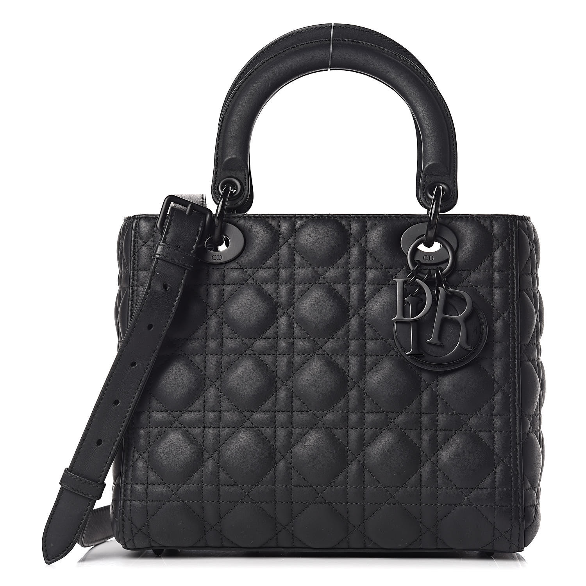
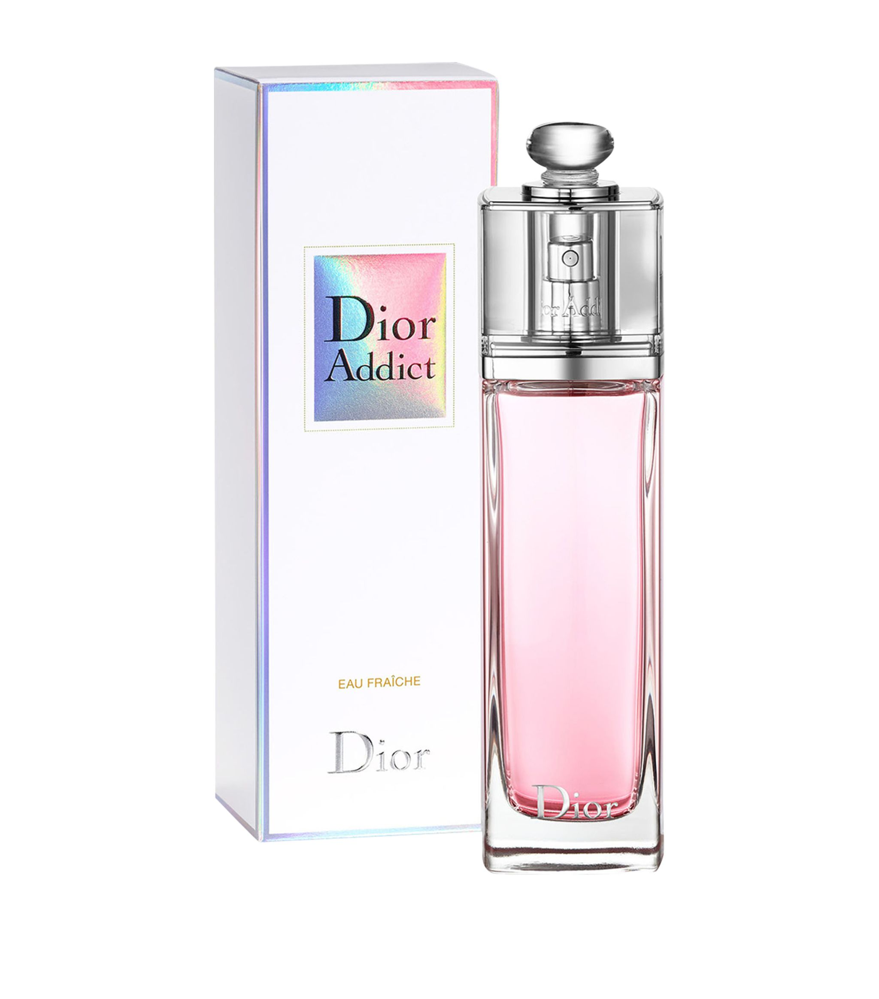
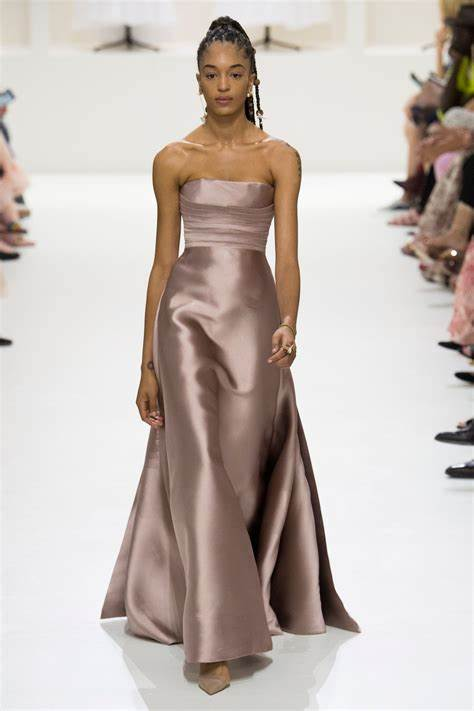

Christian Ernest Dior; 21. siječnja 1905. – 24. listopada 1957.) bio je francuski modni dizajner i osnivač jedne od vodećih svjetskih modnih kuća, Christian Dior SE. Njegova modna kuća poznata je diljem svijeta, postigavši prepoznatljivost "na pet kontinenata u samo desetljeću."Diorove vještine dovele su do njegovog zapošljavanja i dizajniranja za razne modne ikone u pokušaju očuvanja modne industrije tijekom Drugog svjetskog rata. Nakon rata, osnovao je i uspostavio modnu kuću Dior sa svojom kolekcijom "New Look". Godine 1947., kolekcija je debitirala s naglašenim ramenima, strukiranim strukom i vrlo punom suknjom. New Look slavio je ultra-ženstvenost i raskoš u ženskoj modi. Tijekom svog života osvojio je brojne nagrade za najbolji kostimografski dizajn. Nakon njegove smrti 1957. godine, suvremene ikone odale su mu počast za njegov život i rad.
  